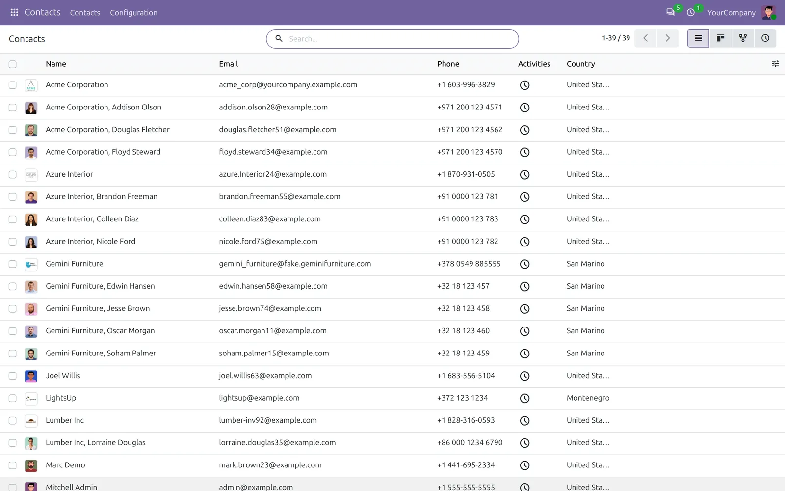
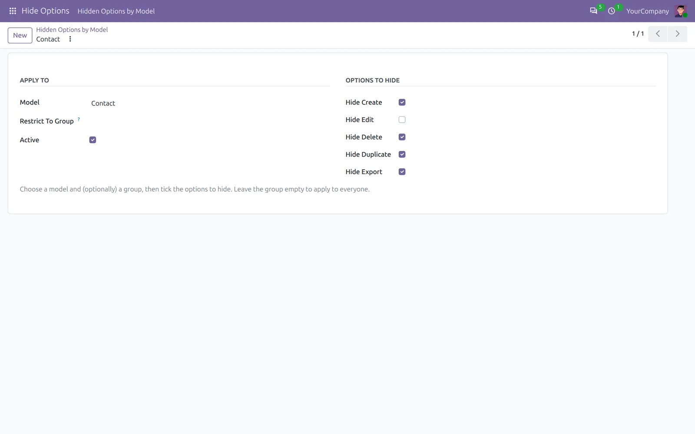

Hide Create / Delete / Export Options by Model
Hide Create, Edit, Delete, Duplicate and Export options per model and group
- Price
- Free
- Odoo versions
- 16.0
- 17.0
- 18.0
- 19.0
- 20.0
- Technical name
tamadoo_hide_model_actions- License
- LGPL-3
Odoo 20.0: not listed on the store yet. Ask at tama.odoo@gmail.com.

Text and screenshots below are from the Odoo 20.0 version of this module.
Hide the options you don't want users to see — model by model.
What it does
For any model, hide the Create, Edit, Delete, Duplicate or Export options — for a specific user group or for everyone. No code, just a small configuration screen.
- Per model and per group.
- Options disappear from the list and form views.
- Leave the group empty to apply to everyone.
How it looks
Configure what to hide

The options are gone

Step by step
1. Open the configuration
As an administrator, open Hide Options → Hidden Options by Model and click New.
2. Choose the model and the group
Select the Model, for example Contact. Set Restrict To Group to limit the rule to one user group, or leave it empty to apply it to everyone.

3. Tick what to hide
Tick Hide Create, Hide Edit, Hide Delete, Hide Duplicate or Hide Export and save.
4. See the result
After a page reload the ticked options no longer show in the list and form views of that model.

Requirements
- Odoo 16 / 17 / 18 / 19 / 20 — Community or Enterprise.
- Depends only on
base.
Tamadoo · tama.odoo@gmail.com
Get Hide Create / Delete / Export Options by Model
Odoo 20.0: not listed on the store yet. Ask at tama.odoo@gmail.com.
Questions before buying? Write to tama.odoo@gmail.com.